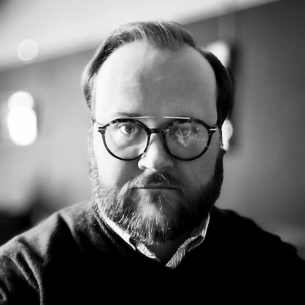

Hello, I'm Ashley. I'm an IT consultant by day and a reader of strange literature by night. I don't have much else to share at the moment.
I'm currently working as an independent IT consultant, specialising in HE student systems. That's probably not what you're interested in but feel free to get in touch if you are.